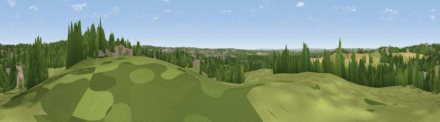

Viewpoint near Newhall
#27751 in England · top 37% of its area beats it · near NewhallWhere it is
The exact computed spot (SK 28025 21325). Click the marker for map links.
The view, rendered

A 360° render of this exact spot computed from the terrain model, tree cover and land cover — summer colours, afternoon light, calibrated against photographs of famous viewpoints. Real trees, hedges and buildings will differ in detail.
The panorama
Grey silhouette: terrain skyline in each direction (720 bearings, Earth curvature and refraction included). Dashed green: skyline with trees (+15 m) and buildings (+8 m) as obstacles. Blue strip: how far the ground is visible on each bearing.
Where the view opens
Wedge length = distance to the farthest visible ground on that bearing (vegetation-aware). Rings at 10, 25 and 50 km.
What fills the view
48% grassland · 28% woodland · 13% built-up · 10% cropland
Angular shares of the visible panorama (visual magnitude), not map area. Landscape diversity 0.53 (0–1 Shannon).
Key numbers
More beautiful places nearby
The staircase of upgrades: each row has a higher view potential than everything closer. Driving times are estimates from straight-line distance, calibrated against real road routing — check an actual route before setting out.
| Place | Direction | Drive | Score |
|---|---|---|---|
| Viewpoint near Bretby | ENE · 2 km | ~6 min | 48.8 |
| Viewpoint near Newton Solney | NNW · 4 km | ~9 min | 49.3 |
| Viewpoint near Hartshorne | ESE · 5 km | ~11 min | 50.4 |
| Viewpoint near Hartshorne | E · 6 km | ~12 min | 57.6 |
| Viewpoint near Whitwick | ESE · 17 km | ~29 min | 63.5 |
| Viewpoint near Whitwick | ESE · 17 km | ~30 min | 71.2 |
| Viewpoint near Stanton under Bardon | ESE · 20 km | ~34 min | 76.0 |
| Viewpoint near Woodhouse Eaves | ESE · 24 km | ~39 min | 77.7 |
52.78877, -1.58588 · source: screening · position refined by local search. Computed location — check access rights before visiting.